Safety Assessments and Audits
Evaluations of infrastructure, operations, environmental hazards, security, transport, fire safety, and emergency preparedness.

Kenya and Africa
Independent specialist consultancy advancing school safety, safeguarding, institutional resilience, and risk governance for education institutions.
About
We partner with schools, colleges, universities, and education stakeholders to create safe, secure, resilient, and legally compliant learning environments.
Our work integrates safety, security, safeguarding, emergency preparedness, governance, and organizational resilience into practical systems that protect lives and preserve educational continuity.
To be Africa's leading centre of excellence for school safety, safeguarding, institutional resilience, and risk governance.
To strengthen safety, preparedness, resilience, and governance within educational institutions through advisory services, capacity building, research, assessments, and innovative risk management solutions.
Strategic Foundation
School safety is both a legal obligation and a core governance responsibility. Hawkins Centre translates national frameworks and global standards into context-specific systems that deliver practical impact.
Areas of Practice
Evaluations of infrastructure, operations, environmental hazards, security, transport, fire safety, and emergency preparedness.
Compliance assessments, regulatory gap analyses, risk frameworks, policy review, and board advisory services.
Protective systems, safeguarding audits, policy development, reporting mechanisms, and staff training.
Response planning, business continuity, crisis frameworks, evacuation drills, and incident command systems.
Practical learning for safety leadership, fire evacuation, child safeguarding, first aid, crisis response, and transport safety.
Independent after-action reviews, root cause analysis, lessons-learned studies, recovery, and improvement planning.
The Hawkins SAFE Framework
A structured methodology guides institutions through hazard identification, assessment, system strengthening, and continuous improvement.
Identify hazards, vulnerabilities, gaps, and emerging threats.
Evaluate likelihood, impact, exposure, and readiness.
Strengthen governance, safeguards, systems, and preparedness.
Improve through monitoring, training, exercises, and learning.
Why It Matters
Strong safety systems protect lives, maintain educational continuity, enhance governance, build public trust, and support better institutional outcomes.
Research and Thought Leadership
Who We Serve
Values
Objective, ethical, and evidence-based service.
High standards of professionalism and technical competence.
Genuine partnership with educational leaders and communities.
Global best practice blended with local context and emerging risks.
Measurable improvements in safety, resilience, and performance.
Our Commitment
True school safety goes beyond gates, fences, and checklists. It is built on strong governance, proactive risk management, effective safeguarding, and a culture of preparedness and resilience.
Request a consultation